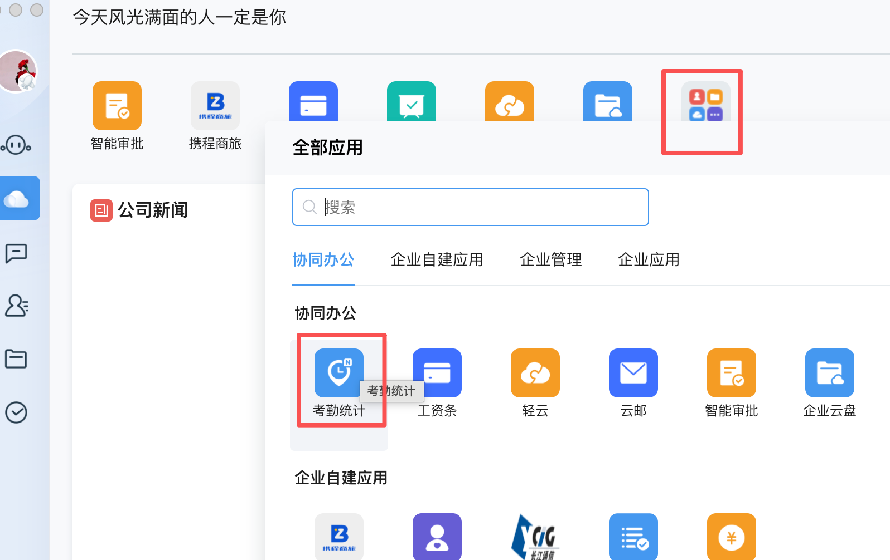
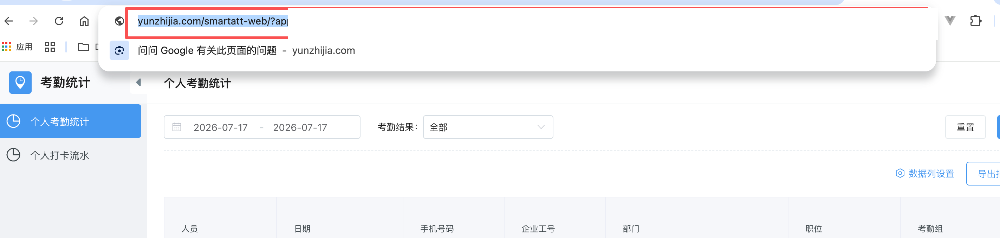
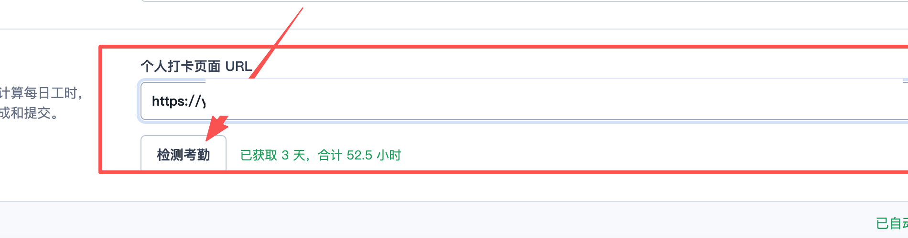

ATTENDANCE HOURS
通过云之家自动统计工时
客户端读取所选日期的有效打卡流水，取当天最早和最晚时间计算工时。授权来自你当前登录的云之家页面，不需要在客户端填写云之家账号和密码。
01
打开考勤统计
登录云之家，进入“全部应用”，在“协同办公”区域打开“考勤统计”。随后进入个人考勤统计页面。

02
复制授权后的完整 URL
考勤页面打开后，点击浏览器地址栏并复制完整 URL。有效地址通常包含临时的 ticket 和 expire_time 参数，它们用于识别当前登录状态。

安全提示 授权 URL 等同于短期登录凭证，请勿发送给他人。客户端只会把它保存在当前电脑的本地 JSON 配置中。
03
粘贴 URL 并检测考勤
打开 Zentao Log Agent 的“设置”，找到“云之家考勤”。把刚复制的地址粘贴到“个人打卡页面 URL”，配置会自动保存。点击“检测考勤”，成功后会显示获取到的天数与合计工时。

CALCULATION
工时如何进入预览
01
按天读取 只读取当前填报周期内的个人有效打卡记录。
02
首末时间 以当天最早和最晚有效打卡的时间差作为当日工时，并按 0.5 小时取整。
03
多任务分配 同一天有多个禅道任务时，先平均分配当天工时，总和保持一致；提交前仍可手动调整。
OPTIONAL BY DESIGN
考勤失败，不阻断填报。
未登录、URL 缺少临时凭证、凭证过期或云之家暂时不可访问时，客户端只会显示提示，并继续使用原有耗时生成预览。保存预览和提交禅道也不会受到影响。